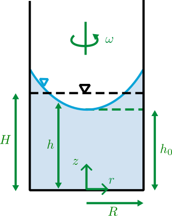

Liquid in Rigid-Body Rotation
Consider a liquid in a container with circular cross section operating in rigid-body rotation with angular velocity \( \omega \) about the vertical \( z \)-axis.
Equation for surfaces of constant pressure
(The free surface is a representative constant-pressure surface of the liquid in rigid-body rotation.)
The constant in the above equation depends on the setup of the \( z \)-coordinate and is also a function of geometry and angular velocity. For a given setup of the \( z \)-coordinate, geometry, and angular velocity, different values of this constant correspond to different free-surface profiles.
Constant volume (no spilling)
Let the container have radius \( R \) and liquid depth \( H \) when \( \omega = 0 \) (so \( H \) is the liquid depth at rest). The volume at rest is
\[ V = \pi R^2 H. \]When rotating at \( \omega \), with the free surface written as
\[ h = \frac{\omega^2 r^2}{2g} + h_0, \]the volume of liquid is
\[ \begin{aligned} V &= \int_0^R 2\pi r\,h\,dr = \int_0^R 2\pi r\left(\frac{\omega^2 r^2}{2g} + h_0\right)dr \\ &= 2\pi \left[\frac{\omega^2}{2g}\int_0^R r^3\,dr + h_0\int_0^R r\,dr\right] \\ &= \frac{\pi \omega^2 R^4}{4g} + \pi R^2 h_0. \end{aligned} \]Equating the two expressions for \( V \) gives
\[ \pi R^2 H = \frac{\pi \omega^2 R^4}{4g} + \pi R^2 h_0 \quad\Rightarrow\quad h_0 = H - \frac{\omega^2 R^2}{4g}. \]Free-surface equation
Substituting \( h_0 \) back into \( h \) gives the free-surface profile for a cylindrical container (no spilling):
\[ z = h = \frac{\omega^2 r^2}{2g} + H - \frac{\omega^2 R^2}{4g}. \]Here \( H \) is the liquid depth when the tank is at rest. Different choices of \( \omega \), \( R \), and \( H \) lead to different free-surface profiles.
Schematic
Vertical cylindrical container of radius \( R \) rotating at angular velocity \( \omega \). The bottom is at \( z = 0 \); the initial liquid depth at rest is \( H \).

During rotation, the free surface \( z \) becomes parabolic. The depth at the center is \( h_0 = H - \dfrac{\omega^2 R^2}{4g} \), and the elevation at the wall is \( z(R) = H + \dfrac{\omega^2 R^2}{4g} \).
Inputs
These values are used to generate three families of free-surface profiles: one varying \( \omega \), one varying \( R \), and one varying \( H \).
Free-surface profiles \( z(r) \)
The plots below show the free-surface profiles \( z(r) \) for three different cases: varying angular velocity \( \omega \), varying cylinder radius \( R \), and varying liquid depth \( H \).